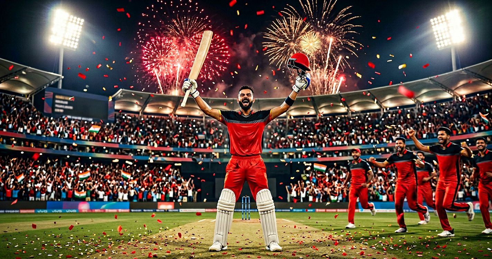
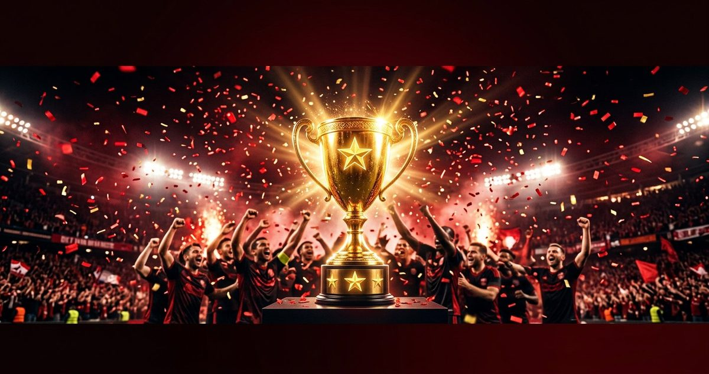

They did it again. On 31 May 2026, Royal Challengers Bengaluru beat Gujarat Titans by 5 wickets in Ahmedabad to win back-to-back IPL titles — and this time Virat Kohli ended it himself with his fastest-ever IPL fifty. From doubting fans to defending dynasty: this is the complete winning story. Ee Sala Cup, Phir Se Namde.

Yes — Royal Challengers Bengaluru won IPL 2026, sealing back-to-back titles. In the final at the Narendra Modi Stadium, Ahmedabad on 31 May 2026, RCB restricted Gujarat Titans to 155/8, then chased down the 156 target to win by 5 wickets with 7 balls to spare. Captain Rajat Patidar lifted the trophy for the second year running, and Virat Kohli finished the job himself with an unbeaten 62, taking home Player of the Match.
GT 155/8 — RCB chased 156 in 18.5 overs — RCB won by 5 wickets. Defending champions become a dynasty, powered by a disciplined bowling effort and Kohli's fastest IPL fifty.
RCB captain Rajat Patidar won the toss and chose to bowl first. Here is the headline scoreline of the IPL 2026 final.
| Batter | Note |
|---|---|
| Washington Sundar | 50 (37 balls) — top scorer |
| Jos Buttler | Fell to Krunal Pandya |
| Shubman Gill (c) | 10 — caught by Patidar off Hazlewood |
| Sai Sudharsan | Out to Bhuvneshwar early |
| Bowler | Wickets |
|---|---|
| Rasikh Salam Dar | 3 |
| Josh Hazlewood | 2 |
| Bhuvneshwar Kumar | 2 |
| Krunal Pandya | 1 (incl. Buttler) |
| Batter | Runs | Balls |
|---|---|---|
| Virat Kohli 🏅 | 62* | 35 |
| Venkatesh Iyer | 32 | 16 |
| Rajat Patidar (c) | — | — |
| Tim David | cameo | — |
GT bowling: Rashid Khan 2/22, Mohammed Siraj 1/36, Kagiso Rabada 1/44, Arshad Khan 1/17.
The final was won in the first innings. RCB's pace attack ripped through Gujarat's top order inside the powerplay — Shubman Gill fell for 10, top-edging a pull to Rajat Patidar off Josh Hazlewood, and Sai Sudharsan was cleaned up by a sharp Bhuvneshwar Kumar short ball. At 55/3, GT were in deep trouble.
Washington Sundar steadied the innings with a fighting 50 off 37 balls after surviving a dropped catch, but RCB kept striking. Krunal Pandya bowled a 114 kph yorker to trap Jos Buttler, and Rasikh Salam Dar finished with three wickets to choke the death overs. Jason Holder never got the platform to launch, and GT limped to 155/8 — a total that always felt 20 short on a true Ahmedabad surface.
RCB didn't just win the final with the bat — they strangled it with the ball. Three powerplay wickets removed every GT match-winner before they could set, and 155 was never going to be enough against Kohli in form.

Chasing 156, RCB came out swinging. Virat Kohli and Venkatesh Iyer raced to fifty in just 3.3 overs — the fastest any team has reached 50 in an IPL final, beating CSK's 2023 record. Kohli launched Kagiso Rabada for 4, 4, 6, 4 in a single over; Venkatesh played through pain for a 16-ball 32.
Then came the wobble. Rashid Khan struck twice in five balls — removing Patidar and Krunal — to drag GT back into it, and a controversial Tim David dismissal made it 132/5. But Kohli, despite a hamstring scare that needed strapping and treatment, refused to leave. A late not-out review on a low Gill catch went his way, and Jitesh Sharma's boundaries eased the nerves. RCB got home with 7 balls to spare.
The Player of the Match award went to one man only: Virat Kohli, 62 not out off 35 balls. His fifty came off just 25 balls — his fastest in any IPL match — and arrived on the biggest occasion of all. Carrying a strapped hamstring, he stood tall, hit the winning runs, and finished a final unbeaten for the franchise he never left.
If 2025 was about ending an 18-year wait, 2026 was about proving it was no fluke. Two finals, two titles, and Kohli at the heart of both. Loyalty, once again, rewarded.
RCB now have two IPL titles — 2025 and 2026 — won consecutively. Going back-to-back is the rarest feat in the IPL; only a handful of franchises have ever managed it. From the team that finished runners-up three times (2009, 2011, 2016) and was a punchline for "Ee Sala Cup Namde," RCB have transformed into the competition's defining force.
RCB's 2026 campaign was a defence built on dominance. They finished top of the table on net run-rate (9 wins from 14) and then dismantled Gujarat Titans in Qualifier 1.
Captain: Rajat Patidar · Head Coach: Andy Flower.
The moment the winning run was struck, the Narendra Modi Stadium — a red ocean again — exploded. RCB players sprinted onto the field, Kohli pumped his fist with that familiar roar, and Rajat Patidar embraced his side for the second June in a row. Defending the title in front of GT's home crowd made it even sweeter.
Across India and online, "Ee Sala Cup Namde" — once a 17-year-long hopeful meme — became a victory chant for the second straight year, now joined by "Encore" and "Back-to-Back." #PlayBold trended worldwide as fans hailed RCB's rise from heartbreak to dynasty.
Posting your RCB celebration reel or status? Grab one of these — and find dozens more in our IPL caption packs linked below.
Want ready-to-post lines for your feed? Use our free AI Caption Generator or copy more from the IPL caption packs in the related reads below.
Generate scroll-stopping captions, trending hashtags and bios — free, no signup. Built for Indian cricket creators.
Try the Free Caption Generator →Yes. RCB beat Gujarat Titans by 5 wickets in the final at Ahmedabad on 31 May 2026 to win back-to-back titles (after their maiden 2025 win).
GT 155/8 (20 overs). RCB chased 156 and won by 5 wickets with 7 balls to spare.
Virat Kohli, for his unbeaten 62 off 35 balls — including his fastest IPL fifty.
Yes — RCB won both IPL 2025 and IPL 2026, taking their total to two titles, won consecutively.
Rajat Patidar, who won the toss and chose to bowl first in the final.
They beat Gujarat Titans by 92 runs in Qualifier 1 (RCB 254/5, GT 162) to qualify directly.